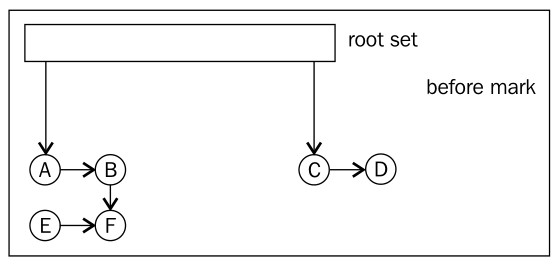
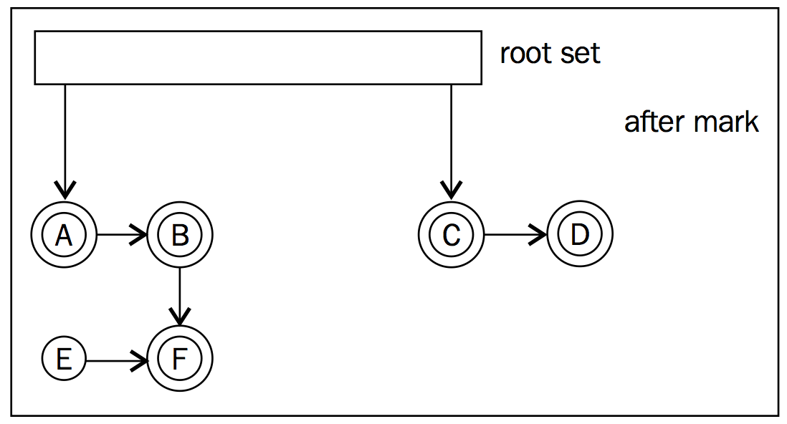
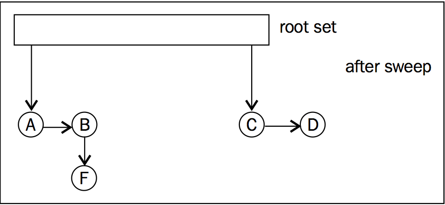
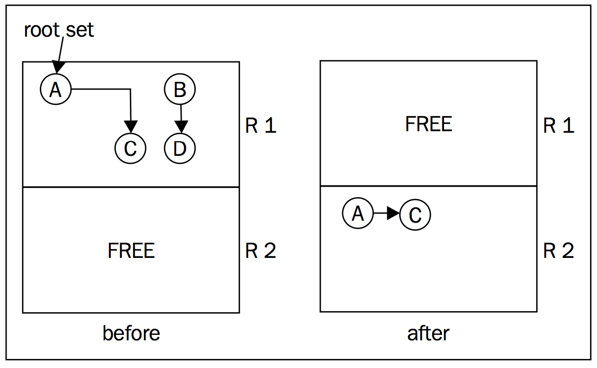
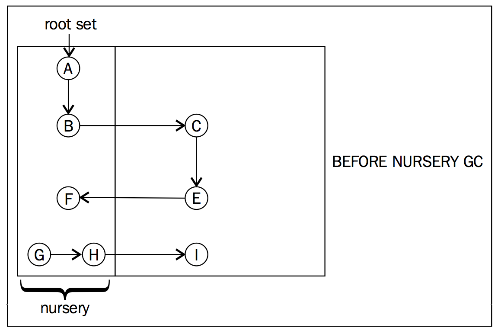
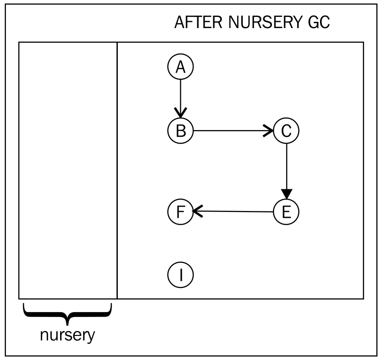

3.3 垃圾回收算法
实际上，自动内存管理就是持续跟踪应用程序中的存活对象，即有哪些对象被其他正在使用的对象所引用，没有被使用的对象会被垃圾回收器回收掉。在本文中， 存活对象和 正在使用的对象会交替使用，它们是一个意思。
但事实上，给垃圾回收技术划分类型并不容易，因此，为了避免在学术社区挑起嘴仗，在这里， 引用计数垃圾回收（reference counting garbage collection）之外的技术都被归为 引用跟踪垃圾回收（tracing garbage collection）。 引用跟踪垃圾回收是指，当执行垃圾回收时，为存活对象建立一个引用关系图，并回收掉那些 不可达（unreachable）对象。除此之外的另一种垃圾回收技术，就是引用计数垃圾回收。
3.3.1 引用计数
在引用计数算法中，运行时会记录下某个时刻有多少存活对象引用了某个指定对象。
当某个对象引用计数降为0时，即没有存活对象引用这个对象时，就可以将其回收掉了。该方法最初应用于Lisp语言的实现，从当时的情况看效率不错，只不过该方法有一个显著缺陷，那就是无法回收带有循环引用结构的对象，即如果两个对象都引用了对方，但却没有其他对象引用它们，则尽管它们已经是 不可达对象了，但由于引用计数始终不为0而不会被回收掉，从而造成内存泄露。
通过上面的描述可以想象，引用计数的实现简单明了，除此之外，还有一大优点就是，垃圾回收器可以立即回收掉引用计数为0的对象。
但是，实时更新对象的引用计数却代价不菲，尤其是在需要使用同步操作的并行运行环境中。目前，市面上还没有以引用计数作为主要垃圾回收方法的JVM实现，不过，将来可以将引用计数应用于JVM的子系统或应用层的简单协议的实现。
3.3.2 引用跟踪
引用跟踪垃圾回收的概念其实很简单，首先，将应用程序中所有可见对象标记为 存活的（live），然后递归标记可以通过 存活对象访问的对象。
当然，在某些情况下，这个过程可能会无穷无尽。
在后文中， 根集合（root set）专指上述搜索算法的初始输入集合，即开始执行引用跟踪时的存活对象集合。一般情况下，根集合中包括了因为执行垃圾回收而暂停的应用程序的当前栈帧中所有的对象，这其中包含了可以从当前线程上下文的用户栈和寄存器中能得到的所有信息。此外，根集合中还包含全局数据，例如类的静态域。简单来说就是，根集合中包含了所有无需跟踪引用就可以得到的对象。
后文会详细介绍根集合的内容。
3.3.2.1 标记-清理
标记-清理算法是目前商用JVM中垃圾回收器的实现基础，实现该算法时可以选择是否拷贝移动存活对象（参见 分代垃圾回收和内存整理中的内容），这其中的难点在于如何实现得效率高，扩展性又好。下面是原始标记-清理算法的伪代码：
标记：
将根集合中的一个对象添加到队列中
遍历队列中的对象，对每个对象X：
将X标记为可达的
将X所持有的引用添加到队列中
清理：
遍历堆中每个对象X：
如果X没有被标记为可达的，就回收之通过前面对算法和引用跟踪技术的介绍，可以知道标记-清理算法的计算复杂度是以堆中存活对象和堆的实际大小为自变量的函数。
下图是执行标记之前堆中对象：

执行标记操作时，首先要遍历存活对象图，然后遍历所有堆中对象，识别出未标记的对象。但实际操作的时候，并不一定非要这样，近年来研究人员已经想出了一些办法来加速这个过程，并尽量使之可以并行进行。
下面的示意图展示了标记阶段结束之后的情况，所有可达对象都已经被标记了，而对象 E由于无法从根集合访问到而没有被标记。

标记-清理算法的基本假设是，对象关系图对象间的引用关系不会在标记阶段发生变化，这就是说，在执行标记操作时，需要暂停所有可能修改对象引用关系的应用程序代码，例如为成员变量赋值。但对于现今的应用程序来说，使用大量数据对象的情况非常常见，所以只靠这样的假设是难以实现高效JVM的。
在下面的示意图中，对象 E已经被回收掉了。

简单实现标记-清理算法时，对于每个可达对象，一般都会使用一个 标记位（mark bit）来表示该对象是否已经被标记过。为对象分配内存时，为了满足对齐要求，其起始地址一般都是偶数，因此，对象指针的最低位总是0，正适合用来做标记位。
标记-清理算法的一个变种是可以并行运行的 三色标记-清理（tri-coloring mark and sweep）。简单来说就是，不再为每个对象设置一个2进制的标记位，而是使用一个带有3个可选值的变量来表示对象的标记状态，具体值为 白色、灰色、黑色（white, grey, black）。其中，标记为 白色的对象表示是已死对象，将会被回收掉，那些不包含指向 白色对象的引用的对象被标记为 黑色。在标记阶段开始的时候，根集合中的对象被标记为 灰色，其他所有的对象被标记为 白色，由于无法获知根集合中对象的子对象的状态，所以也将之标记为 白色，此时不存在 黑色对象，而标记算法的目的就是要找到这些对象。
三色标记算法的伪代码实现：
标记:
默认将所有对象标记为白色
将根集合中的对象标记为灰色
if 灰色对象 exists:
for x in 灰色对象:
for y in (x引用的白色对象):
将y标记为灰色
if x所有的引用都指向另一个灰色对象:
将x标记为黑色
清理:
回收所有白色对象这里的主体思想就是，即使在标记过程中对象的引用关系发生了改变，例如分配内存并修改对象属性域的值，只要黑色对象不引用白色对象，垃圾回收器就可以继续正常工作。一般情况下，标记操作是跟应用程序源代码无关的，所以内存管理器可以在运行应用程序时帮助完成颜色标记的工作，例如，在为对象分配内存后，立即对其进行颜色标记。
除了上述的算法外，还有一些并行的标记-清理算法的变种，这部分内容超出了本书的范畴，不再赘述。
3.3.2.2 暂停-拷贝
暂停-拷贝是一种特殊的引用跟踪垃圾回收技术，其运行方式简单有效，但对于现实生产环境中普遍使用的大内存容量来说，有些不切实际。
使用暂停-拷贝算法需要将堆划分成两个同样大小的分区，而在应用程序运行时只能使用其中一个分区，这样才能保证有足够大的空间来存储从垃圾回收中存活下来的对象，但这种方式实在太浪费内存。该算法的最简实现是从根集合的对象开始遍历正在使用的分区中的全部存活对象，将标记为 存活的（live）的对象拷贝至另一个未使用的分区。在垃圾回收结束后，交换两个分区的角色，等待下次垃圾回收开始。
该算法的优点是规避了内存碎片化可能带来的问题，执行垃圾回收过程中，将存活对象拷贝到另一个分区时，会将其放在找到的第一个、大小合适的位置。由于对象是按照遍历对象引用关系图的顺序摆放的，所以包含引用关系的对象的位置往往离得较近，这在很大程度上缓解了垃圾回收给系统缓存带来的负面影响。
该算法的显著缺点是，每次垃圾回收时都必须将所有存活对象拷贝到另一个未使用的分区，当存活对象很多时，开销很大，而且垃圾回收本身就会对系统缓存带来很大的负面影响。更为重要的是，运行应用程序时只能使用堆的一半，浪费严重。

上图展示了暂停-拷贝垃圾回收的过程。堆被划为两个分区，在垃圾回收开始的时候，根集合中只包含对象 A，对象 A引用了对象 C。在标记阶段，垃圾回收器判断出只有对象 A和对象 C是存活对象，于是将其拷贝到分区 R2，而对象 B和对象 D作为已死对象被回收掉。 对象 A和对象 C在分区 R1中并不相邻，由于拷贝对象时按照对象引用关系和 先到先得（first-come-first-serve）的策略被放到了一起。
3.3.3 STW(stop-the-world)
STW（stop the world），顾名思义，为便于执行垃圾回收而暂停所有应用程序的所有Java线程，堪称垃圾回收的 阿克琉斯之踵。即使是像标记-清理这种几乎可以完全并行运行的算法，仍然难以处理垃圾回收时对象引用关系发生变化的情况。如果想要在执行垃圾回收的同时，还可以执行Java应用程序，并允许随意给对象引用赋值，那么垃圾回收器和应用程序之间就需要进行某种交互，这样才能正确的完成垃圾回收的工作。这就涉及到 同步（synchronization），即STW。对于所有涉及到垃圾回收和内存管理的编程语言来说，STW时间的长短非常重要，这也是以这些语言编写的程序在运行过程所遇到的延迟和不确定性问题的主要原因之一。
由于垃圾回收可能会移动堆上的对象，例如执行内存整理操作，但原先指向这些对象的对象指针的值却并没有发生变化，那么应用程序再次运行的时候就会出现错误，因此垃圾回收器必须更新这些对象指针的值，将之指向对象的新位置，而这步更新操作需要 同步进行，防止对象位置再次发生改变。
简单实现的话，就是暂停应用程序运行，使用尽可能多的线程执行垃圾回收，在恢复应用程序线程之前，更新对象指针的值。但是，这种方法并不现实，因为现代服务器端应用程序都对响应时间有一定要求，像这种需要暂停应用程序数百毫秒来执行垃圾回收的方法令人无法接受。因此，对于那些对系统延迟有较高要求的应用程序来说，为了能将响应时间降到最小，垃圾回收器就需要与应用程序并发执行，而且还要能正确处理执行垃圾回收时对象指针发生变化的问题。这很难，除非应用程序非常特殊，否则没办法完全绕过STW，因此在实际生产环境下，工作重心是尽可能缩短应用程序的暂停时间。
3.3.3.1 保守式 vs. 准确式
正如前面提到的，虚拟机需要使用一些额外的信息来记录栈帧中对象的存储位置，这样才能在执行垃圾回收时正确构建根集合的初始值，此外，如果某个应用程序线程因垃圾回收而暂停了，还需要明确该线程当前的上下文。
其实，要想知道对象间的引用关系并不难，因为在为对象分配内存时，垃圾回收器会记录相关信息。如果类X中包含有对类Y的引用，则在类X的所有实例中，类型Y的对象指针具有相同的位置偏移。对于JVM来说，对象和C语言中的结构体没什么区别，但是垃圾回收器却没法自动判断出栈帧中对象的位置。
查找某个线程暂停时的上下文信息其实很简单，只需要使用检索表（lookup table）或搜索树（search tree）来查找当前指令寄存器的指令是属于哪个Java方法的即可。方法涉及到的对象，一般是作为传入参数、方法的返回值，或是对引用变量进行赋值操作，此外，移动指令也会在寄存器之间拷贝对象引用。应用程序暂停时，运行时系统无法根据当前的上下文回溯到对象创建时的上下文，但是，为了能够正确的构建根集合，垃圾回收器却必须清楚的知道对象的存储位置。
简单来说，可以规定编译器必须将对象数据和非对象数据（例如整数）分别存储到不同的寄存器或内存位置中。以x86平台为例，可以强迫代码生成器只使用esi或edi存储对象的引用地址，整数则只能存储于其他寄存器；或者规定将对象存储于栈帧时，其位置的偏移地址必须是指针大小的偶数倍（例如 [esp + 0 * 4]或[esp + 2 * 4]等），而存储整数时，偏移地址就必须是整数类型长度的奇数倍（例如[esp+1*4]或[esp+3*4]等）。类似这样的规定保证了在可以存储对象的地方只可能存在有效对象或null两种值，而内存中的其他地方因为不存储对象而根本不需要动用垃圾回收器，从而大大简化了垃圾回收器的工作。但是，受限于CPU中通用寄存器的数量，寄存器分配器不得不使用 **Spill**技术来生成相关代码，但这会对程序的执行性能造成较大影响，对于像x86这种通用寄存器数量不多的平台来说，影响尤甚，因此这种方法并不实用。
使用 保守式垃圾回收器可以绕过这个问题，这种类型的垃圾回收器会将所有看起来像是对象指针的数据都当做对象指针处理。例如，像17和4711这样的值可以简单的认为是整数类型的值，但是那些看起来像是指针地址的值就必须要进行检查，查看堆中对应位置的内容。这个过程有较大的性能损耗，但对于像C语言这样的弱类型编程语言来说，要想实现自动内存管理就必须要有这个过程。此外，保守式垃圾回收器还有垃圾对象清除不净和无意义的对象移动的问题存在。
Java使用的是 准确式垃圾回收器，可以将对象指针类型数据和其他类型的数据区分开，只需要将元数据信息告知垃圾回收器即可，它自己会正确处理的。而这些元数据信息，一般可以从Java方法的代码中得到。
3.3.3.2 livemap
在JRockit JVM中，使用了称为 livemap的数据结构来保存一些元数据，例如对象保存在哪些寄存器和栈帧中。此外，每个对象指针中都使用了一个标志位来表示该对象指针的值是 **内部指针（internal pointer）**#Precise_vs._conservative_and_internal_pointers)，还是真实对象的起始位置。由于内部指针指向对象的内部数据，因此指向的是堆中的位置，而不是对象头。于是乎，当内部指针的 基对象（base object）在内存中的位置发生变化时，必须要对内部指针进行更新，但对象指针毕竟不是对象，因此不需要移动它们的位置。
内部指针的典型用途是遍历数组。在Java编程语言中，不存在内部指针，以下面的代码为例：
for (int i = 0; i < array.length; i++) {
sum += array[i];
}上面的代码会被编译为如下形式的代码：
for (int ptr = array.getData(); ptr < sizeof(int) * array.length; ptr += sizeof(int)) {
sum += *ptr;
}在上面的示例中，由于数组对象array的位置可能会因垃圾回收而移动，所以为了可以保证程序可以正确的运行下去，垃圾回收器需要知道ptr是一个指向数组元素的内部指针。由于无需在每次迭代中计算数组元素的值，程序可能会运行得更快一些。
因此，将对象指针和内部指针存储在元数据（即 livemap）中，对于执行垃圾回收来说，是很有裨益的。下面以计算数组元素之和的函数来说明内部指针的使用方式。
public static Integer sum(Integer array[]) {
Integer sum = 0;
for (int i = 0; i < array.length; i++) {
sum += array[i];
}
return sum;
}在x86-64平台上，JRockit会生成类似下面的汇编代码（译者友情提示，部分注释是我自己写的，不可尽信）：
[SumArray.sum([Ljava/lang/Integer;)Ljava/lang/Integer;
7a8c90: push rbx ;保存参数array对象的地址，瞎猜的
7a8c91: push rbp ;保存调用者的基址指针，这里使用FPO优化
7a8c92: sub rsp, 8 ;在栈上分配空间，以便存储局部变量的值
7a8c96: mov rbx, rsi ;参数放在了rsi中，rsi猜测是类指针。这里复制一份引用到rbx中，猜测是这里将参数array对象的地址放到rbx中
*----- [rsib, rbxb] ;rsi和rbx中保存了array对象的引用，并且都是基对象的引用
7a8c99: test eax, [0x7fffe000] ;执行gc safepoint polling，R大说的。恩，这里没懂
*--B-- [rsib, rbxb] ;对象没变化
7a8ca0: mov ebp, [rsi + 8] ;[rsi+8]中保存了数组的长度，这里复制到rbp中
7a8ca3: test ebp, ebp ;检查数组长度是否是0
7a8ca5: jg 7a8cb1 ;如果ebp>0的话，就跳转到7a8cb1处继续执行,否則，在7a8caf就会跳转，结束循环
*----- [nothing live] ;这里我也不理解为啥就都死了，估计是因为后面函数马上就要返回了，所以就无所谓了
7a8ca7: xor rax, rax ;清空rax，现在rax为0
*----- [nothing live] ;接上，没有活的
7a8caa: call Integer.valueOf(I) ;调用Integer.valueOf(I)方法，返回数值0对象的Integer对象作为函数的返回值
*C---- [rsib] ;调用Integer.valueOf(I)方法后返回一个Integer对象，其引用存储在rsi中
7a8caf: jmp 0x7a8cf7 ;结束循环
*--B-- [rsib, rbxb] ;如果没有跳转的话，这时rsi和rbx中保存了对象地址的
7a8cb1: mov r9d, [rsi + 16] ;这里应该是将数组元素的第一个元素的地址放到了r9中
*----- [r9b, rbxb] ;现在r9寄存器中也有对象地址了
7a8cb5: mov eax, [r9 + 8] ;猜测将数组的第2个元素的地址存入rax中
*----- [rbxb]
7a8cb9: call Integer.valueOf(I) ;调用函数，获取数组中第1个元素对应的Integer对象
*C---- [rsib, rbxb]
7a8cbe: mov r9d, 1 ;r9d = 1，为啥？
7a8cc4: cmp rbp, 1 ;
7a8cc7: jle 0x7a8cf7 ;判断数组中是不是只有一个元素，如果是，跳转到0x7a8cf7，结束循环，返回eax中的值
*----- [rsib, rbxb]
7a8cc9: mov [rsp + 0], rbx ;之前移动rsp在栈上分配了8个字节，这里应该是用来存储数组对象地址
7a8ccd: mov ebx, r9d ;把r9d的值存到eax中，现在ebx=1。这里r9寄存器只是用来给ebx赋值了，后面r9就被覆盖了新值。
*----- [rsib, [rsp + 0]b]
7a8cd0: mov r9d, [rsi + 8] ;将数组长度存储到r9中
*--B-- [[rsp + 0]b]
7a8cd4: test eax, [0x7fffe000] ;执行gc safepoint polling，同不懂。
7a8cdb: mov r11, [rsp + 0] ;把参数地址复制一份到r11。
*----- [r11b, [rsp + 0]b]
7a8cdf: mov ecx, [r11 + 4 * rbx + 16] ;获取下一个循环对象的地址。r11是对象数组对象的地址，rbx是循环索引，这里乘以4，猜测应该是开启了指针压缩，偏移16个字节是要跳过数组对象的标记字(8个字节)、类型对象（4个字节）和数组长度（4个字节）
*--B-- [rcxb, [rsp + 0]b]
7a8ce4: add r9d, [rcx + 8] ;做累加
7a8ce8: mov eax,r9d ;将累加和复制到eax中，以便下面调用Integer.valueOf函数创建Integer对象
*----- [[rsp + 0]b]
7a8ceb: call Integer.valueOf(I) ;调用函数，获得Integer对象
*C-B-- [rsib, [rsp+0]b]
7a8cf0: add ebx, 1 ;循环索引数加1
7a8cf3: cmp ebx, ebp ;检查循环次数，如果未完成，则跳转回7a8cd0处继续执行
7a8cf5: jl 7a8cd0
*--B-- [rsib]
7a8cf7: pop rcx ;这个是函数返回值
7a8cf8: pop rbp ;弹出调用者的基址指针
7a8cf9: pop rbx ;弹出最初保存的array对象的地址
7a8cfa: ret ;返回调用者函数译者注，代码中的注释是我自己写的，未必对，而且没写完，因为看不懂。
- 感谢R大对理解代码的提点
- 上面是Intel语法的汇编
x86_64平台在Linux上的调用约定。貌似这里的示例代码在使用寄存器时，并不是按照这种方式用的。 1. 由于使用FPO，节省了rbp，所以rbp在这里存储了数组元素的个数 2. ebx作为计数器使用 3. eax存储数组元素的累加和，作为调用
Integer.valueOf方法的参数值 4. ecx存储下一个循环对象的地址跳转指令简介，http://caoxudong.info/post/intel_instruction_note_part1
- 64位处理器新增了8个寄存器，分别是 r8、 r9、 r10、 r11、 r12、 r13、 r14、 r15，其对应的32位版本是 r8d、 r9d、 r10d、 r11d、 r12d、 r13d、 r14d、 r15d，16位版本是 r8w、 r9w、 r10w、 r11w、 r12w、 r13w、 r14w、 r15w，8位版本是 r8b、 r9b、 r10b、 r11b、 r12b、 r13b、 r14b、 r15b
7a8c91处置所以没有修改rbp（mov rbp, rsp）的值，是因为该方法是一个叶节点方法（leaf method），所以不需要再创建新的栈帧，称为Frame pointer omission(FPO)。FPO相关内容： 1. http://blogs.msdn.com/b/larryosterman/archive/2007/03/12/fpo.aspx 2. http://www.nynaeve.net/?p=91 3. http://msdn.microsoft.com/en-us/library/2kxx5t2c(v=vs.110).aspx.aspx)
7a8c99处执行的test指令是为了做gc safepoint polling
7a8ca0处获取数组长度。这里我没有查到jrockit对象分布，只能按照hotspot理解，一个数组对象的内存排布大致是（假设开启了指针压缩）： 1. 0 ~ 3 字节： 标记字 2. 4 ~ 7 字节： 类型对象 3. 8 ~ 11 字节： 对象长度 4. 12 ~ n*4 字节： 数组元素地址（n=数组元素长度） 5. 最后4个字节（可能存在，可能不存在。对象按8字节对齐）
一般来说，汇编会以下面的逻辑实现循环：
if 不符合循环条件 跳转到循环结束 else do //do sth. while 是否符合循环条件 循环结束后的其他代码
在上面的汇编代码中已经加入了一些注解信息来帮助理解，因此读者无需弄清每一行汇编代码的具体含义。在这个示例中，代码的优化程度并不高，因此没有生成之前所描述的内部指针，此外，Integer.valueOf方法也没有被内联进来。
汇编代码中的注解信息可以告知垃圾回收器在某个时间点上，对象存储在哪些寄存器和栈帧位置中。例如，在调用Integer.valueOf方法时会返回一个整数对象，按照调用约定，这个对象会存储在rsi寄存器中（其中，rsi后面的b表示是一个基指针（base pointer），而不是内部指针）。
此外，在进入一个方法的调用栈帧后，livemap信息中还指明了rsi和rbx寄存器中包含有对象。这个注解信息紧跟在地址为7a8c96的代码mov rbx, rsi后面。
按照JRockit的调用约定，寄存器
rbx是 被调用者保存的，在调用结束后仍然有效。出于性能上的考虑，编译器会将调用Integer.valueOf方法的结果保存在寄存器中，使之保持存活状态，这样就避免了使用 **Spill**方法来调配寄存器。
那么，垃圾回收器会在何时开始执行STW式的垃圾回收呢？直观上看，垃圾回收可能发生在任意时间点，即每个本地指令都可能成为挂起点，但要给每个本地指令标记对象存活信息又有很高的成本。正如上面的示例代码，这不太现实。
就JRockit来说，只会在某些指令上标记对象存活信息，例如在循环体头部或有多个入口的基本块的头部，因为在这些地方无法得知控制流的走向。此外，在call指令处也会标记对象存活信息，这是因为在计算栈信息时必须可以立即得知对象的存活信息。
在第2章中曾提到过，JRockit是以类似 back patching的方式执行代码生成任务的，因此JVM必须能够理解并反编译本地代码，而最初设定这个机制时，是为了方便虚拟机可以在某个操作系统线程中，从某个指令地址开始模拟本地指令的运行。在此机制下，若无法从某个已暂停的线程的上下文中得到livemap信息，JRockit就会模拟指令运行，直到发现可用的livemap信息。这种运行方式就称为 rollforwarding。
在JRcokit R28版本中，rollforwarding机制已被废除，而是使用传统的、基于安全点（safepoint）的方式。
rollforwarding的优点在于，应用程序线程的暂停位置不受限制，哪里都可以，使用相关操作系统的信号机制即可实现，而且无需在生成的代码中添加额外指令。
其缺点在于，模拟指令运行也是要花时间的，还需要兼顾到所有支持的硬件平台，比较费事，难以测试，因为输入是个无限集合，而且模拟运行本身就不太正确。此外，要想支持新硬件架构也颇为费事，需要针对新平台实现模拟运行框架。通常情况下，模拟器中出现的bug都很细微，不易复现，难以查找。
近些年，使用信号来暂停线程的方式受到颇多争议。实践发现，在某些操作系统上，尤以Linux为例，应用程序对信号的使用和测试很不到位，还有一些第三方的本地库不遵守信号约定，导致信号冲突等事件的发生。因此，与信号相关的外部依赖已经不再可靠。
新版本的JRockit使用了传统一点的 安全点（safepoint）来处理应用程序暂停操作。这种方式会在代码中插入用于解引用某个 保护页（guard page）的 安全点指令（safepoint instruction），在这些指令指针中都包含了完整的livemap信息。当要暂停Java应用程序线程时，运行时系统负责保证保护页是不可访问的，这使得执行安全点指令时会触发一个错误处理，从而使应用程序线程暂停。就目前来看，所有的商用JVM都使用了这种方法，或是其变种。举例来说，循环结构是个典型，一般都会在循环头中插入安全点指令，在没有解引用保护页之前就继续执行应用程序是绝不允许发生的，因此，像无限循环这样的结构就必须使用安全点指令。
使用安全点的缺陷在于，它需要在生成的代码中额外插入显式解引用保护页的代码，因此造成一点性能消耗，但相对于它的优点来说，这点牺牲还是值得的。
到目前为止，我们对垃圾回收做了简要介绍，但主要集中在基本概念和算法上，以及执行垃圾回收时所面临的问题，例如如何生成根集合。接下来，将理论联系实际，对如何优化垃圾回收，以及如何使垃圾回收更具伸缩性进行介绍。
3.3.4 分代垃圾回收
经过大量实际观察得知，在面向对象编程语言中，绝大多数对象的生命周期都非常短。
理论上讲，对于那些临时对象来说，编译时的逃逸分析可以使其避免在堆上分配内存，但在现实世界中，有时却行不通，尤其对于像Java这样的语言来说，编译时的逃逸分析难以做的非常充分。
事实上，将堆划分为两个或多个称为 代（generation）的空间（译者注，一般是两个），并分别存放具有不同长度生命周期的对象却是可以提升垃圾回收的执行效率，新创建的对象存放在称为 新生代（young generation）中（一般来说，新生代的大小会比 老年代小很多），随着垃圾回收的重复执行，生命周期较长的对象会被 提升（promotion）到老年代中。因此，新生代垃圾回收和老年代垃圾回收两种不同的垃圾回收方式应运而生，分别用于对各自空间中的对象执行垃圾回收。
新生代垃圾回收的速度非常快，比老年代快几个数量级，即使新生代垃圾回收的频率更高，执行效率也仍然比老年代垃圾回收强，这是因为大多数对象的生命周期都很短，根本无需提升到老年代。理想情况下，新生代垃圾回收可以大大提升系统的吞吐量，并消除潜在的内存碎片。
在JRockit中，新生代称为 nursry。
译者注，nursery这个词我真翻译不出来，"保育代"？听起来很别扭，所以后文还是会使用"新生代"，请见谅
3.3.4.1 多个新生代的内存排布
一般情况下，分代式垃圾回收默认只使用一个新生代，而在某些情况下，使用多个小一点的新生代分别存储不同年龄的对象（即从多少次垃圾回收中存活下来）会更有效率。相比于普通的一个新生代、一个老年代的分布，多个新生代的分布，对象被提升到老年代之前会在新生代中多待一会，减少了老年代中对象的数量。当需要分配大对象时，这种方法尤其有用。
这里，假设大部分对象的生命周期都很短。如果它们的存活时间能稍长一点，例如能活过一次垃圾回收，那么使用单一新生代时，这些对象就会被提升到老年代，当他们在某个时刻被回收掉时，就会产生内存碎片。相比之下，使用多个新生代来存储不同年龄的对象则可以减缓这种现象的发生。
当然，使用多个新生代会带来一些对象拷贝的开销，因此在设置新生代分区个数时需要做好权衡。
3.3.4.2 写屏障
在分代式垃圾回收中，执行垃圾回收时，引用的双方可能不在同一个代中。例如，老年代中的对象可能包含有指向新生代对象的引用，或者有反向的引用关系。因此，如果在执行垃圾回收时将所有这样的引用关系都更新一遍，这种操作带来的性能损耗就完全抵消了分代式垃圾回收所带来的性能提升。由于分代式垃圾回收的关键点就是将堆划分成不同的段，并分别处理其中的对象，因此，需要代码生成器提供一些辅助信息来帮助完成垃圾回收。
在实现分代式垃圾回收时，大部分JVM都是用名为 **写屏障（write barriers）**的技术来记录执行垃圾回收时需要对堆的哪些部分进行遍历。当对象 A指向对象 B时，即对象 B成为对象 A的属性域的值时，就会触发写屏障，在完成属性域赋值后执行一些辅助操作。
写屏障的传统实现方式是将堆划分成多个小的连续空间（例如每块512字节），每块空间称为 卡片（card），于是乎，堆被映射为一个粗粒度的 卡表（card table）。当在Java应用程序中将某个对象赋值给对象引用时，会通过写屏障设置 脏标志位（dirty bit），将该对象所在的卡片标记为 脏（dirtied）。
这样，遍历从老年代指向新生代的引用时间过长的问题得以缓解，垃圾回收器在做新生代垃圾回收时，只需要检查老年代中被标记为 脏（dirty）卡片所对应的内存区域即可。

上图是运行时将要开始执行新生代垃圾回收时的情况。如果此时根集合中只包含对象 A，从图中的引用关系可知，对象 A和对象 B是存活的。这里会忽略掉对象 B与对象 C的引用关系，因为对象 C位于老年代中。但是，执行垃圾回收时，却必须要将位于老年代的对象 E添加到根集合中，因为它含有一个指向新生代对象的引用。在写屏障作用下，垃圾回收器无需遍历整个老年代来查找对象 E，只需要检查老年代中那些被标记为 脏的卡片。在这个例子中，在通过写屏障将对象 E中的引用指向对象 F后，对象 E所在的卡片会被标记为 脏，因此，新生代垃圾回收器可以将对象 F添加到可跟踪对象集合中。
对象 A和对象 B是根可达的，在存活过新生代垃圾回收后，会被提升到老年代中；而对象 G和对象 H不是根可达的，会被垃圾回收器回收掉；对象 E和对象 F是根可达的，因此对象 F在新生代垃圾回收后会被提升到老年代。下图展示了，经过新生代垃圾回收和对象提升之后的对象分布情况，由于执行的是新生代垃圾回收，所以原本在老年代中的对象未受影响。

3.3.5 吞吐量 vs. 延迟
回忆一下第二章中的内容，JVM优化的主要方向是缩短总体运行时间。就代码生成来说，总体运行时间等于代码编译时间与代码执行时间之和，正如前面介绍的，针对其中一方进行优化可能会延长另一方的时间。
就内存管理来说，等式相对简单一点。为了降低总体运行时间，最小化垃圾回收所花费的时间似乎是唯一合适的方案。
但问题在于垃圾回收是STW式的，会在某个时间点暂停所有应用程序线程，而如果想要使垃圾回收线程和应用程序并发运行的话，就需要做很多额外的操作，因此，垃圾回收的时间会延长一些。如果应用程序重点关注吞吐量，那么STW式的垃圾回收就不是问题了，直接暂停应用程序线程，动用所有的CPU全力执行垃圾回收即可。但实际上，对于大多数应用程序来说，低延迟是很重要的，而导致延迟高的一个原因就是CPU将部分时间放在了非应用程序线程上。
因此，在内存管理中需要权衡的就是最大化吞吐量和保持低延迟哪个比较重要。在实际场景中，二者难以兼得。
3.3.5.1 优化吞吐量
对于某些应用程序来说，延迟大小根本不是问题，例如那些需要操作大量对象的离线任务。那些需要运行整晚的批处理任务就不像C/S架构的应用程序那样对响应时间有什么要求。
如果应用程序对于暂停时间没什么限制的话，那么就可以尽全力优化以达到最大化吞吐量的目标。
以最大化吞吐量为目标的垃圾回收方法有很多种，最简单的就是暂停应用程序线程，以尽可能多（线程数至少会与当前平台的CPU核数相同）的线程并行执行垃圾回收，每个线程负责对堆的一部分区域进行垃圾回收。当然，还需要在不同的垃圾回收线程之间做一些同步处理，以避免不同区域中有引用关系存在时可能会出现的种种问题。在JRockit中，这种方式称为 并行垃圾回收（parallel garbage collection）。
其实，在保持低延迟的水平下，仍可以通过对并行垃圾回收做一些调整来满足不同等级的吞吐量要求，例如在堆中使用分代式管理。
3.3.5.2 优化延迟
针对于低延迟优化基本上是围绕着STW式的操作展开的，尽可能让应用程序线程多工作。但是，如果垃圾回收器得到的CPU资源过少，无法跟上内存分配的速度，则堆会被填满，JVM会抛出OutOfMemoryError错误。因此，理想的垃圾回收器应该是可以伴随着应用程序运行完成大部分垃圾回收工作的。
在JRockit中，这种方式称为 并发垃圾回收（concurrent garbage collection），在Boehm和相关研究者的论文中首先使用了这个词来介绍这种技术。后来，使用 近并发（mostly concurrent）（译者注：这词我真想不好应该怎么说）来指代该算法的一个改进版。
并发和 并行两个词的含义容易引起误会，就垃圾回收来说，并行一词指的是垃圾回收线程不与应用程序线程同时运行，之所以称之为 并行是因为在执行垃圾回收时会使用尽可能多的线程，同时工作。而垃圾回收线程和应用程序线程同时工作的垃圾回收方式称为 并发垃圾回收。
其实，并发垃圾回收是并行垃圾回收一种特例，因为它也会使用多线程同时执行垃圾回收操作。并发与 并行这两个词并非专指JRockit中垃圾回收，在学术研究和商业实现中已成为标准名词。
标记-清理（mark-sweep）垃圾回收算法中的很多步骤都可以以并发的方式与应用程序线程同时进行，其中，标记是最重要的步骤，执行时间也最长，大约会占总体垃圾回收时间的90%。幸运的是，标记操作可以采用并行实现，而且其中很大一部分工作可以与应用程序线程并发执行。尽管清理和整理（compacting）操作相对麻烦一些，但也可以对不同的堆区域分别执行清理和整理操作来提升JVM的吞吐量。
近并发垃圾回收的主体思路是想办法在应用程序线程执行的时候，尽可能多的完成垃圾回收工作。在整个垃圾回收周期内仍然包含了几个较短的、需要STW操作的环节，需要同步修改对象关系图的操作，因为在其他环节中，应用程序线程仍在运行。就目前来看，在所有JVM的商业实现版本中，为了实现低延迟的目标，都是用了类似的算法。
在 **近实时垃圾回收** 一节中，将会对JRockit如何实现高性能和低延迟做更详细的介绍。
3.3.6 JRockit中的垃圾回收
JRockit中垃圾回收算法的基础是 三色标记清理算法（tri-coloring mark and sweep），并加入一些改进优化以提升并行性，优化了垃圾回收的线程数，并且使其可以与应用程序线程并发运行。而在新生代中，对该算法做了大量的调整以完成暂停和拷贝的工作。
根据优化目标的不同，不同内存区域中会使用不同的垃圾回收算法。在本章的后续内容中将会对垃圾回收策略和自适应实现做相关介绍。
在JRockit中，垃圾回收器可以选择为堆中的对象打一个长期或短期的 pinned标签，该标签的使用可以使并发垃圾回收算法更具灵活性，还可以提升I/O性能，例如在整个I/O操作中，始终保持缓冲区在同一个位置。对于那些需要频繁操作内容的应用程序来说，这个特性可以大幅提升整体性能。其实在垃圾回收算法中，pinned对象是个相对简单的概念，但出于某些原因，只有少数几种JVM商业实现，例如JRockit，实现了 pinned标签。
3.3.6.1 老年代垃圾回收
标记清理算法是JRockit中并行/并发垃圾回收的基础，在实际实现中，使用的是双色标记算法，虽然与标记-清理算法中所介绍的内容不太一样，但仍保持了足够的并行性。在JRockit中，使用 灰色标记位（grey bit）来记录堆中的存活对象，从语义上讲，这些对象等同于传统三色标记算法中灰色对象和黑色对象的合集，区别在于，JRockit中的存活对象会被放入到垃圾回收线程的 线程局部队列（thread local queue）中。这样做有两个好处，一是并行运行的垃圾回收线程可以使用各自的线程局部数据，而不需要同步操作公共数据，二是可以使用 预抓取（prefetching）方式，按照先入先出的顺序来访问队列中的元素，这样可以提升整体的执行性能。后文会详细介绍使用预抓取的优势。
此外，在JRockit的并发垃圾回收中还是用 存活标记位（live bit）来跟踪系统中所有的存活对象，这样就可以快速找出应用程序在并发标记阶段新创建了哪些对象。
JRockit不仅将 卡表（card table）应用于分代式垃圾回收，还用在并发标记阶段结束时的清理工作，避免搜索整个存活对象图。这是因为JRockit需要找出在执行并发标记操作时，应用程序又创建了哪些对象。修改引用关系时通过写屏障可以更新卡表，存活对象图中的每个区域使用卡表中的一个卡片表示，卡片的状态可以是 clean或者 dirty，有新对象创建或者对象引用关系修改了的卡片会被标记为 dirty。在并发标记阶段结束时，垃圾回收器只需要检查那些标记为 dirty的卡片所对应的堆中区域即可，这样就可以找到在并发标记期间新创建的和被更新过引用关系的对象。
3.3.6.2 新生代垃圾回收
JRockit在新生代中使用了暂停-拷贝算法的变种，大致过程是暂停应用程序线程，拷贝存活对象到堆中的另一个区域或提升到老年代。
拷贝对象时是按照引用关系层次结构，以广度优先的方式进行的，这样可以增加缓存的局部性，即为了尽可能高效的利用缓存，互相引用的对象在存储时应该放在一起。为了达到较好的负载均衡效果，可以采用广度优先算法的并行实现。
垃圾回收周期结束后，存活对象会被拷贝到老年代中。在查找年轻代存活对象时，并不需要对整个堆进行搜索，只需要借助前面介绍的存活标记位（live bit）和卡表(card table)，查找那些存活对象和在并发标记阶段被修改的内存区域即可。最开始的时候，新生代中是空的，而所有的对象在更新引用时都会通过写屏障将对应的卡片设置为 dirty，所以查找新生代中的存活对象时只需要扫描标记为 dirty的卡片中查找含有存活标记位的对象即可。
在JRockit中，新生代垃圾回收是以并行方式执行的，而非并发，但出于执行效率方面的考虑，年轻代垃圾回收会穿插在并发老年代垃圾回收的期间执行，这增加了程序的复杂性，当老年代垃圾回收和年轻代垃圾回收需要对同一数据结构进行操作时尤甚。
但事实证明，在使用这些数据结构、位集合和卡表时，只要老年代垃圾回收时可以知晓哪些卡片在并发标记阶段被标记为 dirty即可，因此在实现中使用了一个额外的卡表来记录原始卡表中有哪些卡片被标记为 dirty，在JRockit中，这些改变的卡片的集合称为 modified union set，只要 modified union set中的卡片在执行老年代垃圾回收时完整无缺，新生代垃圾回收就可以放心执行并清除卡片的 dirty标记。因此，老年代垃圾回收和新生代垃圾回收可以同时执行而不会互相捣乱。
译者注：相关参考资料 《A Generational Mostly-concurrent Garbage Collector》
在JRockit中，还有一个 保留区（keep area）的概念，它是新生代中的一块内存，用于存储那些在新生代垃圾回收期间没有被拷贝到老年代的对象。通过将新创建的对象存储于保留区中，使新创建的对象在被拷贝到老年代之前有更大的可能会被回收掉，其具体实现采用了与多代式垃圾回收相似的内存划分，使得对象会在新生代中逗留更长的时间。
3.3.6.3 永生代垃圾回收
JRockit与HotSpot的一个主要区别就是没有 永生代（permanent generation）。在HotSpot中，一部分内存被用作永生代，用于存储一些元数据，例如类对象等。从一般意义上讲，处于永生代中的对象不会被回收掉（具体情况与不同的垃圾回收策略相关），因此，如果应用程序需要载入大量的类，那么永生代可能会被填满而导致JVM抛出OOM错误，这样的问题曾经在一些客户那里出现过，当出现问题时，不得不重启整个java进程。
在JRockit中，元数据信息存储在堆外的本地内存中，代码缓冲区中存储的已生成方法和已经无用的类加载器引用的元数据信息会不断的被垃圾回收器清理。在JRockit中，因元数据导致的OOM错误与HotSpot中略有不同，除了JRockit使用本地内存存储，HotSpot使用堆内存存储以外，还有两个重要区别，一是在JRockit中总是默认启用对无用元数据的清理，二是存储元数据的空间没有固定大小限制。事实上，也很难为元数据区确定一个准确的大小限制。因此在这方面，JRockit是动态分配内存的，无需考虑大小限制，当然，如果任意分配而不做回收的话，最终还是可能会超过本地内存大小的限制，从而使虚拟机抛出错误的。
译者注：俺认为HotSpot中的堆应该是指老年代和新生代，不应该包含永生代。JDK8中，HotSpot的永生代也要被剔除了。
3.3.6.4 内存整理
JRockit是以单线程、非并发的方式执行内存整理的工作，但对于并行垃圾回收器来说，内存整理是在 清理阶段（sweep phase）进行的。因为内存整理是单线程运行的，因此运行速度和时间可控就显得非常重要。JRockit在每次执行垃圾回收时只会对堆的某一部分做内存整理工作，以此来控制内存整理的运行时间。大部分时间里，会使用 启发式算法（heuristics algorithm）来选择到底对哪部分内存做整理，以及整理到何种程度，此外，还会用于确定到底使用何种类型的内存整理，即是选择只在堆中的一个分区内做整理的 内部整理（internal compaction），还是选择在堆中的几个分区之间做整理的 外部整理（external compaction） （也称为 清理 evacuation）。
为了更高效的更新那些指向被移动了的对象的引用，在标记阶段，如果堆中某个分区中的对象将来会被移动位置的话，JRockit会记录下所有指向该对象的引用。这部分信息可以用来判断是否应该对某部分区域做内存整理，还可以判断是否因为有太多其他对象引用了某个对象而不宜移动该对象的位置。